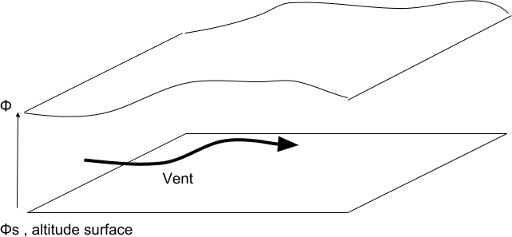
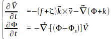
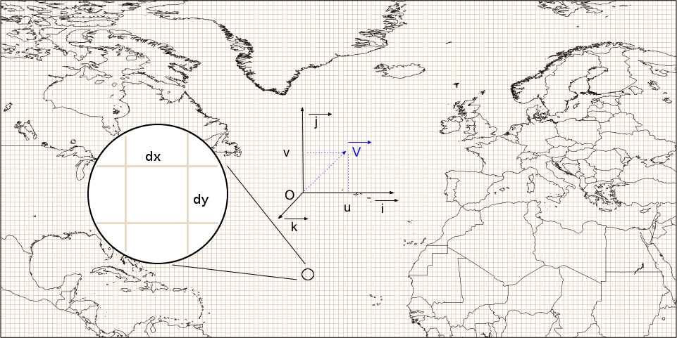

Je vous propose aujourd'hui de relever un challenge de programmation très intéressant ! Il s'agit ni plus ni moins que de coder un modèle météo. Le but n'est pas de révolutionner la science, mais plutôt de réaliser le modèle météo de prévision le plus simple possible. L'objectif initial du projet était de faire un moteur physiquement réaliste mais léger pour un jeu basé sur la météo. On veut donc se contenter de quelque chose de très basique : résolution grossière, physique basique qui va à l'essentiel : nuages, pluie, rayonnement solaire. Il faut que ce soit très léger en calculs, pour pouvoir tourner en temps réel. Et le tout doit être programmé en JavaScript, parce que c'est bien plus rapide pour proto-typer et tester sans avoir besoin d'outils de développement et d'une tonne de librairies. Armé de mes plus précieux bouquins de météo, je me suis attelé au challenge. Je vous propose de relater mes avancées au fil de l'eau sur ce blog, en espérant que ça vous intéressera. Je ne sait pas où ça nous mènera, on va y aller étape par étape et on verra bien si on arrive au bout ou pas ! Le but est avant tout d'apprendre.
Il n'est clairement pas envisageable de se lancer bille en tête dans le codage. Des modèles, il en existe de beaucoup de sortes : barocline, barotrope, en grille A, B, C ou D, à différences centrales, spectral... Il faut donc faire un choix dans tout cela. Sans surprise, on va commencer notre quête par le niveau 1 - voire même le tuto d'initiation, ce n'est pas la peine de se noyer directement en affrontant le boss de fin ;). Gardons toujours à l'esprit l'objectif initial : avoir un modèle simple à implémenter et pas trop lourd en calculs. En d'autres termes, on cherche moins la précision du résultat que la vitesse et la simplicité de calcul.
Notre premier choix se porte donc sans surprise sur le modèle le plus basique que j'ai pu trouver. Il porte le doux nom de modèle barotrope, ou modèle en eau peu profonde. On va commencer par une première partie un peu théorique où l'on va décortiquer le principe de fonctionnement et d'intégration, et puis on va aborder le codage proprement dit dans une seconde partie.
Ce modèle permet seulement de prévoir le géopotentiel à 500hPa (environ 5500 mètres d'altitude), représentatif de l'atmosphère moyenne. Il part de l'hypothèse simplificatrice que l'atmosphère est une couche mince et homogène, qui s'écoule autour de la terre, un peu comme un cours d'eau - d'où son nom. Pour le faire fonctionner, on doit seulement connaître le vent et l'altitude du niveau du sommet de l'atmosphère, celui-ci agissant comme la surface de la "rivière" qui ondule et se déforme au gré du courant. Comme il n'y a pas de notion de température, de vitesse verticale ni de frottements, c'est comme considérer que l'évolution de l'atmosphère est uniquement inertielle. L'approximation est raisonnable pour une prévision à 24 heures. Au-delà, ce n'est plus suffisamment réaliste. Mais ce n'est pas grave en regard de nos objectifs : commençons par implémenter le modèle en eau peu profonde, pour apprendre les techniques numériques et se faire un peu la main.

Commençons par jeter un oeil aux équations du modèle :

Celles-ci sont écrites directement sous forme de dérivées, c'est-à-dire qu'elles expriment pour chaque unité de temps t de combien varient les variables du modèle en fonction de l'état actuel du système. Voyons ce que nous avons :
Tous les opérateurs de gradient, divergence et de produit vectoriel peuvent paraître barbares... Je ne souhaite pas alourdir cet article en expliquant à quoi ils servent. Développons et écrivons ces équations dans une forme un peu plus "informatisable". Au final tout se résume à de bonnes vieilles dérivées comme on a appris à l'école, selon un axe x ou y :
Réaliser la simulation n'est alors plus qu'un problème d'itération. L'algorithme est le suivant :
Il se pose maintenant plusieurs questions auxquelles nous allons devoir répondre :
Les variables du modèle ont deux dimensions - on appelle cela un champ. Comme on ne peut pas informatiquement représenter les données de façon continue, on va procéder comme pour tout signal numérisé : on discrétise, ce qui est l'équivalent d'un échantillonnage pour le son par exemple. On va définir une grille à deux dimensions, et en chaque point de grille espacés de dx et dy nous aurons les valeurs de nos variables. C'est tout simplement un tableau. Dans notre cas, toutes les variables sont définies aux mêmes points de grille, on dit qu'il s'agit d'une grille de type A. Il existe des dispositions plus évoluées qui permettent de façon astucieuse d'augmenter la précision des calculs. Mais c'est hors du cadre de cet article, on aura l'occasion d'y revenir.

Ce n'est pas un problème très compliqué, on se contentera de donner la formule suivante, qui calcule la dérivée d'une variable A au point X selon l'axe x :
dA(x)/dx = 1/(2*dx) * ( A(x+dx) - A(x-dx) )
Il suffit donc de prendre les valeurs aux points de grille à droite et à gauche, et d'en faire la différence. Je vous laisse le soin d'adapter la formule pour l'axe y ;).
Note pour les matheux : ce calcul est le développement de Taylor du premier ordre de la dérivée.
Pour calculer les nouvelles valeurs à T+dt de nos variables, le schéma d'avance temporelle le plus simple est le schéma d'Euler :
A(t+dt) = A(t) + dA(t) * dt
Il a le mérite de permettre l'avance dans le temps en ne connaissant que les valeurs des variables à l'instant T. Mais ce schéma est d'une précision insuffisante, on dit qu'il est instable.
Pour avoir une intégration temporelle stable, il existe bien d'autres schémas, certains étant plus complexes que d'autres à mettre en oeuvre. Fidèles à notre objectif de simplification, nous prendrons le schéma d'avance explicite centré. En voici la formule :
A(t+dt) = A(t-dt) + dA(t)*2*dt
De part le fait qu'il calcule la valeur en t+dt à partir de la valeur en t-dt, sans tenir compte de la valeur en t, on l'appelle aussi schéma en saute-mouton. Plus précis et stable, ce schéma a l'inconvénient de nécessiter de connaître la valeur précédente des variables. Il n'est donc pas utilisable au démarrage de l'intégration. Pour solutionner le problème, on procède de la manière suivante :
L'intégration numérique ne fonctionne que sous certaines conditions. On ne peut pas prendre n'importe quelle taille de grille dx, dy ou de pas de temps dt. Il a été démontré que pour que le modèle soit stable, il faut que la condition suivante soit réalisée, dite condition CFL du nom des météorologues qui l'ont démontrée :
U*dt/dx < 1
Pour faire simple, U représente la vitesse maximale de propagation que l'on souhaite représenter dans le modèle, tous types d'onde compris. Afin d'avoir une modélisation correcte, on fixe U=300m par seconde.
Pour notre projet, on souhaite travailler à une résolution horizontale d'un degré d'arc, soit environ 111km pour dx. Selon la formule, notre pas de temps ne devra pas dépasser 370 secondes soit un peu plus de 6 minutes - qu'on arrondira volontiers à 360 secondes.
On a maintenant tous les éléments théoriques nécessaires pour se lancer dans l'implémentation en JavaScript. Mais cet article est déjà assez long comme cela, je vous donne rendez-vous pour la partie 2 : on abordera le codage et on présentera une démo en ligne du modèle.